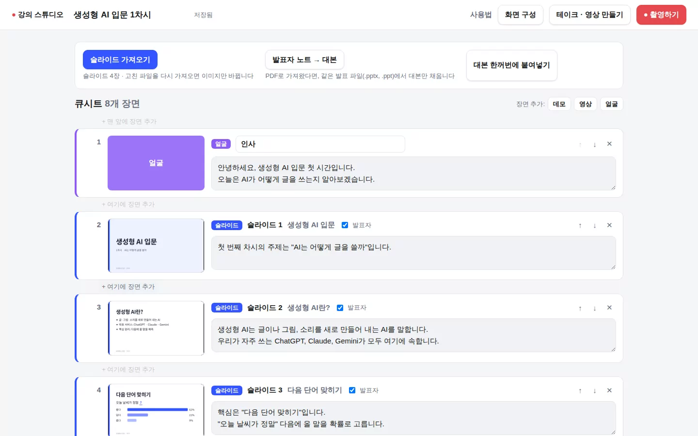
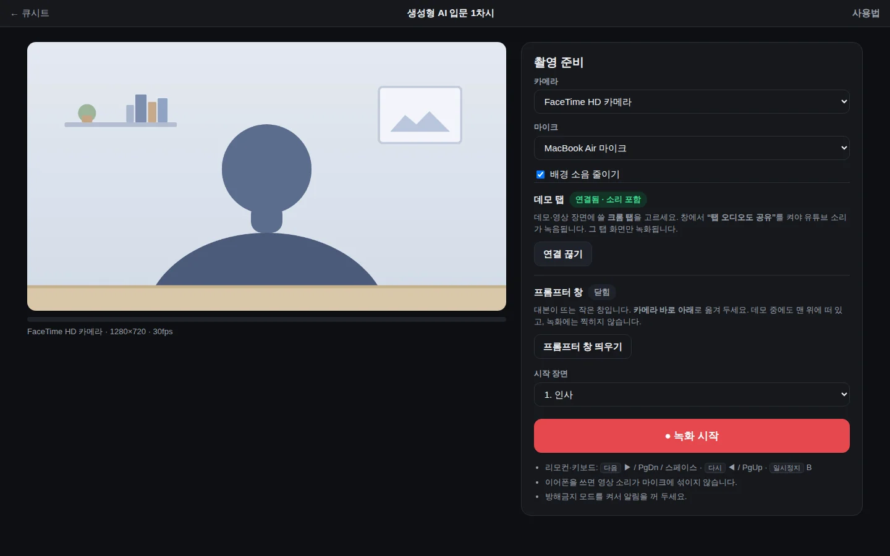
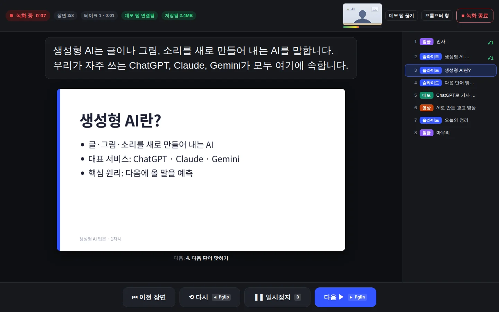
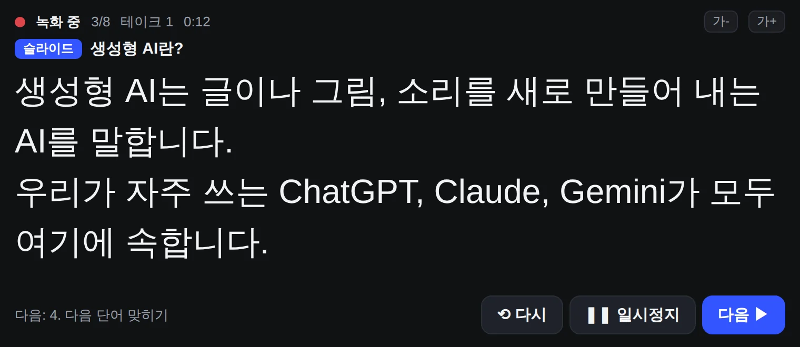
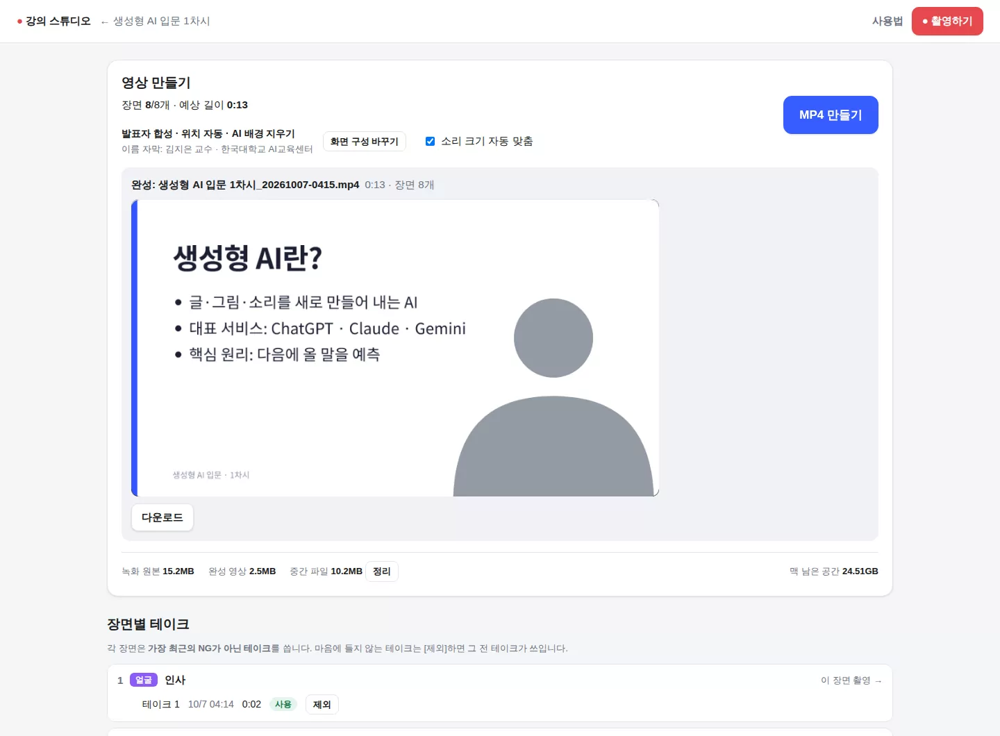

강의 스튜디오 사용법
맥북과 크롬에서 씁니다. 큐시트를 만들고, 리모컨으로 촬영하고, 버튼 하나로 MP4를 만듭니다.
강의 순서표를 만들고, 장면마다 할 말을 적어 둡니다.

1 2 3 4장면은 완성 영상에서 이렇게 나옵니다
준비 화면에서 네 가지를 확인하고 녹화를 시작합니다.

1 2 3 4지금 장면을 마치고 다음 장면으로 넘어갑니다.
리모컨 ▶ · 키보드 → 또는 스페이스방금 장면을 처음부터 다시 찍습니다.
리모컨 ◀ · 키보드 ←잠깐 멈췄다가 같은 장면을 이어서 찍습니다.
키보드 B틀려도 멈추지 마세요. ◀ 한 번이면 그 장면만 다시 찍고, 틀린 부분은 영상에서 빠집니다.
촬영 중 화면

1 2 3
프롬프터 창은 데모 중에도 맨 위에 떠 있고, 영상에는 찍히지 않습니다. 데모 중에는 리모컨 대신 이 창의 다음을 누르세요.
버튼 하나면 됩니다.

1 2 3 4강의스튜디오 실행을 더블클릭합니다. 처음에는 우클릭 → 열기를 누르세요.사파리에서는 동작하지 않습니다. 꼭 크롬으로 여세요.